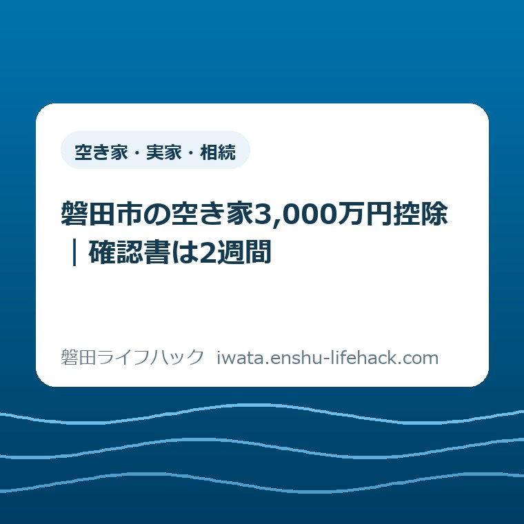

空き家・実家・相続
磐田市の空き家3,000万円控除｜確認書は2週間

この記事の要点
Q. 磐田市で相続した空き家を売りました。3,000万円控除の確認書は、どう申請しますか？
A. 磐田市の確認書は確定申告の添付書類で、控除の可否を決める書類ではありません。発行は2週間程度、1通300円。オンライン申請と郵送受取もできます。売却後に契約書や住民票などをそろえ、税務署または税理士にも適用要件を確認してください。
導入——売却が終わっても、相続人の手間は終わらない
磐田市で相続した空き家を売った方は、すでに相当な手間を払っています。名義の確認、片付け、仲介、契約、引渡しと続いた後です。確定申告の段階で「市の確認書も必要」と知れば、もう一つあるのか、と思うのが自然です。
空き家の3,000万円特別控除は、相続した家なら一律に使える仕組みではありません。建築時期、相続直前の居住者、相続後の使い方、売却時期、売却価格、耐震または取壊しの時期など、複数の条件が重なります。
磐田市が発行する書類の正式名は「被相続人居住用家屋等確認書」です。2026年6月19日更新の磐田市公式ページでは、発行まで2週間程度、手数料は1通300円と案内されています。
意外なのは、3,000万円が税額から直接差し引かれるわけではないことです。確認書が届いた時点で、特例の利用が確定するわけでもありません。二つの誤解を外してから、申請の順番を組む必要があります。
オンライン申請はできます。ただし、画面で手続きを送れば確認書がその場で発行される仕組みではありません。メール認証から申請し、市の審査を経て、証明料と郵便料を決済し、紙の確認書を郵送で受け取ります。
相続した家を使う、貸す、売る、解体するところから整理したい方は、先に磐田市の空き家・実家じまい・相続した家を確認してください。この記事は、売却を選んだ後の確認書と確定申告に範囲を絞ります。
磐田市の「空き家」ページは、所有者向けに相談会等、優遇税制、危険空き家解体費用の助成を分けています。「空き家に関する相談会等」では、司法書士や税理士などへ相談できる機会を案内しています。
相談会の日程は固定ではありません。利用を考える方は、磐田市の最新の開催案内を確認してください。
先に結論——確認書は「税の合格証」ではない
被相続人居住用家屋等確認書は、磐田市が家屋の居住状況や相続後の使用状況などを確認した書類です。国税庁は、確定申告書へ添付する書類の一つとして位置付けています。
確認書を発行するのは、売った家屋や土地の所在地を管轄する市区町村です。相続人の現在の住所で申請先を選ぶわけではありません。物件が磐田市内なら磐田市へ申請します。
特例の適用可否を判断するのは税務署です。磐田市の確認書が出ても、売却期限、売却価格、耐震性、買主との関係、他の税の特例との組合せで対象外になる場合があります。
市への確認書申請と、税務署への確定申告は別の手続きです。市に確認書を申請しただけでは、税の申告は終わりません。確定申告書、譲渡所得の内訳書、登記事項証明書なども確認します。
| 確かめること | 主な確認先 | 役割 |
|---|---|---|
| 居住・使用状況 | 磐田市 | 確認書の発行 |
| 特例の適用可否 | 税務署・税理士 | 税務上の条件確認 |
| 名義・建築時期 | 登記資料 | 対象不動産の裏付け |
この役割分担を最初に分ければ、「市が出したから大丈夫だと思った」という行き違いを避けられます。確認書は欠かせない一枚ですが、それ一枚で完結する書類ではありません。
3,000万円は、売却代金でも税額でもなく譲渡所得から引く
空き家の3,000万円特別控除は、一定の要件を満たす譲渡所得から最高3,000万円を控除する仕組みです。売却価格から3,000万円を引く計算でも、納める税額から3,000万円を引く計算でもありません。
譲渡所得は、売却代金から取得費や譲渡費用などを差し引いて計算します。概念を単純化すると、譲渡所得が4,000万円なら、最高3,000万円の控除後は1,000万円が残る、という順番です。実際の取得費や税額は個別に計算します。
「最高」という言葉も見落とせません。譲渡所得が1,200万円なら、控除できるのは1,200万円までです。使い切れなかった差額が現金で戻る仕組みではありません。
2024年1月1日以後の譲渡では、対象となる家屋と敷地を取得した相続人が3人以上なら、控除上限は1人2,000万円です。記事タイトルの3,000万円だけで、自分の上限を決めないでください。
取得費を確かめるには、親が買ったときの売買契約書や領収書が手掛かりになります。不動産の候補自体がそろっていない場合は、所有不動産記録証明書と名寄帳の違い｜磐田市版から、全国の登記と市内の課税資料を分けてください。
税額の試算は、この記事だけで決められません。相続税の取得費加算など、同時には使えない特例もあります。契約前か、遅くとも申告準備の最初に、税務署または税理士へ資料を見せるのが安全です。
対象家屋は、古い一戸建てなら全部ではない
国税庁が示す対象家屋は、原則として1981年5月31日以前に建築され、区分所有建物の登記がなく、相続直前に被相続人以外の居住者がいなかった家屋です。三つとも確認が要ります。
分譲マンションの一室は、区分所有建物に当たるため対象外です。戸建てでも、建築日が1981年6月1日以後なら、この特例の対象家屋には当たりません。
亡くなった方が老人ホームなどへ入所していた場合は、直ちに対象外とは限りません。要介護認定、入所先、家財の保管、他人へ貸していないことなど、別の条件を満たせば対象になり得ます。
相続から売却まで、事業、賃貸、居住に使っていないことも条件です。短期間でも第三者へ貸した、相続人が住んだ、店舗や事務所に使った場合は、税務署へ事実を伝えて確認します。
売却代金は1億円以下である必要があります。1億円以下の判定は、一契約だけではありません。
合算期間は相続時から始まります。終わりは、特例対象物件を売った日から3年を経過する日の属する年の12月31日です。自分や他の相続人が分割して売った代金も含めます。
後日の売却で合計が1億円を超えた場合は、その売却日から4か月以内に修正申告と納税が必要だと国税庁は案内しています。
親子や夫婦など、特別な関係にある人への売却は対象外です。売却相手、契約時期、家屋の使われ方を後から直せない条件として、契約前に切り分けます。
対象か迷う段階で売却を急ぐ必要はありません。家の名義、建築日、相続直前の居住者、相続後の利用状況を一枚に書けば、税務相談で確認すべき点が見えるようになります。
期限は二つ——売る日と、売った後の工事完了日
特例の売却期限は、相続開始の日から3年を経過する日の属する年の12月31日です。単純な「死亡日から36か月以内」ではありません。
たとえば相続開始が2023年2月10日なら、3年経過日は2026年2月10日です。その日が属する2026年の12月31日までが売却期限になります。日付は戸籍などで確認します。
国税庁の2026年4月1日現在の案内では、対象となる譲渡期間自体も2027年12月31日までです。個別の3年期限だけでなく、制度全体の適用期限も重ねて見ます。
2024年1月1日以後の譲渡では、買主が売却後に耐震改修または取壊しを行う方法も加わりました。この方法は、譲渡日の属する年の翌年2月15日までに工事を終える必要があります。
磐田市公式ページは、確認書申請だけの固定期限を示していません。確認書は確定申告に添付します。
私は、発行2週間だけで逆算せず、売却後すぐ準備を始める順番を勧めます。

売却期限を過ぎた後に、確認書だけ急いでも戻せません。先に守るのは売却の期限です。確認書の準備は、その売却から確定申告へつなぐ工程として置きます。
売り方は三つ——耐震、先に取壊し、買主が後で工事
対象となり得る売り方は、大きく三つに分かれます。耐震基準を満たす家屋を売る方法、相続人が家屋を取り壊してから土地を売る方法、売却後に買主が耐震改修または取壊しをする方法です。
家屋を残して売る一つ目の方法では、譲渡時に一定の耐震基準を満たす必要があります。耐震基準適合証明書など、確定申告に添付する証明資料も確認します。
相続人が先に取り壊す二つ目の方法では、相続から取壊し、売却までの使用状況が問われます。取壊し後に、その土地を駐車場など別の用途へ使うと条件から外れる場合があります。
買主が後で工事する三つ目の方法は、2024年以後の譲渡に加わった選択肢です。売主が自費で先に解体しなくても対象になり得ますが、買主の工事完了と、その証明を受け取る段取りが増えます。
国土交通省は、特約がなくても確認書の交付は可能と説明しています。ただし、譲渡後の工事と証明書の受渡しには買主の協力が欠かせません。同省は、契約へ付ける文言の例も公開しています。
私は、工事期限と書類の受渡しを書面にし、仲介する事業者と税理士に文言を確認する順番を勧めます。
売却の名義、境界、現地状態、契約を先に一覧にしたい方は、磐田市で家を売る前の確認項目へ進んでください。控除だけを先に見て、売却全体の条件を落とさないための入口です。
磐田市の確認書は、発行2週間程度・1通300円
磐田市の「家屋または土地を譲渡した場合の優遇税制」は、確認書の発行期間を2週間程度と明記しています。2026年9月8日に、同ページの更新日が2026年6月19日であることも確認しました。
2週間は保証された最長日数ではありません。添付書類の不備、申請書の記載漏れ、関係官庁への照会がある案件では、日数を要する場合があると市は案内しています。
発行手数料は1通300円です。窓口で受け取る場合は、確認書の作成後に市から連絡があり、建築住宅課住宅管理グループへ受け取りに行きます。
郵送受取を選ぶ場合は、証明料300円と郵便料110円をキャッシュレスで支払います。2026年9月8日時点の合計は410円です。郵便料は改定される可能性があります。
窓口は磐田市国府台3-1、西庁舎2階です。受付は午前8時30分から午後5時15分、電話は0538-37-4851です。
私は、申請前の確認を建築住宅課住宅管理グループから始める順番を勧めます。
物件が磐田市外にある場合は、その所在地の市区町村が確認書の申請先です。相続人が磐田市に住んでいるという理由だけで、磐田市へ申請するものではありません。
オンライン申請は、来庁を一回減らす仕組み
磐田市は、スマートフォンなどから被相続人居住用家屋等確認書を申請し、郵送で取得できるようにしています。市役所へ申請書を持参しなくても手続きを始められます。
オンライン申請は、LoGoフォームでメールアドレスの登録と認証から始まります。申請画面の案内に沿って、該当する売り方と必要資料を確認します。
利用できるクレジットカードは、VISA、Mastercard、American Express、JCB、Diners Clubです。証明料と郵便料の支払いに使います。
オンラインという言葉から、即日でPDFが届くと考えないでください。市が内容を審査し、紙の確認書を郵送するため、発行期間の目安は同じく2週間程度です。
来庁の移動は減らせますが、資料集めは減りません。古い住民票、登記資料、売買契約書、写真が不足すれば、オンラインでも手続きは止まります。
窓口とオンラインのどちらが早いかは、個別の不備や照会で変わります。
私は、一律にどちらが最短かは言えません。資料に迷いがある方には、送信前に電話で申請区分を確かめる順番を勧めます。

必要書類は、売り方と家の経過で変わる
磐田市は必要書類として、確認申請書、被相続人の住民票の除票、相続人の住民票、売買契約書の写しなどを挙げています。書類の一部は原則コピー不可です。
取り壊した家屋では、閉鎖事項証明書が必要になります。敷地の登記事項証明書も、原則コピー不可として列挙されています。発行日などの条件は申請先へ確認します。
敷地などの使用状況が分かる写真には、撮影日の記載が必要です。更地の写真だけでなく、いつ撮ったかを裏付けられる形で保存してください。
市の一覧には「等」と書かれています。老人ホームへの入所、売却後の買主による工事、複数相続人、住所の移動がある案件では、追加の裏付けが必要になる場合があります。
売買契約書の写しが必要なので、確認書の申請は原則として売却後です。どの様式を使うかは売り方で変わります。
私は、契約前に様式と証拠の残し方を確認する順番を勧めます。
書類を一袋へ混ぜると、不足が見えにくくなります。「家族と住所」「家屋と敷地」「売却と使用状況」の三つに分けてください。家族の誰が原本を持つかも決めます。
良い点——費用と日数が先に分かり、オンラインで出せる
磐田市の案内で良い点は、発行2週間程度と手数料300円が、申請前に見えることです。相続人は確定申告までの予定へ、市の審査時間と費用を置けます。
オンライン申請と郵送受取が選べる点も実用的です。磐田市外に住む相続人は、西庁舎へ申請と受取で二度出向かずに済みます。
市のページは、税の詳しい条件を国税庁へつないでいます。市の確認範囲と税務署の判断を混ぜず、それぞれの確認先を示している点も良いところです。
カード決済と郵送があることで、平日の移動を一回減らせます。すでに相続と売却で時間を使った家族にとって、派手ではなくても効く改善です。
注文したい点——「どの様式か」を最初に選べる案内がほしい
磐田市の案内へ注文したい点は、売り方別の入口を、ページ上でもう一段はっきり分けることです。耐震済み家屋、売主が先に取壊し、買主が後で工事の三つで、必要な証拠が変わります。
3,000万円という数字が最初に目に入る一方、確認書は税の合格証ではないという注意は、もっと近くにあってよいと私は考えます。申請者が市と税務署を往復する前に、役割分担を読めるからです。
2週間程度という案内には、不備や照会で延びる注意も書かれています。
私は、確定申告直前の申請を避ける準備順を、市が一枚の図で示してほしいと考えます。持ち主が自分の予定へ落とし込みやすくなるからです。
これは担当職員への不満ではありません。税、市の確認、登記、売買契約が別々の仕組みで動くことが、分かりにくさの原因です。一事業者として、入口の交通整理を望みます。
対案・結論——今日、四つの日付と事実を一枚にする
相続空き家の3,000万円特別控除を確認する最初の一歩は、相続開始日、建築日、売却日、売却後の工事完了予定日を一枚に書くことです。日付が未確定なら、空欄のまま確認先も書きます。
日付の横に、相続直前の同居人、老人ホーム入所の有無、相続後の利用状況、売却価格を加えてください。この一枚が、市と税務署へ同じ事実を伝える土台になります。
売却前なら、税務署または税理士へ特例の対象になり得るかを確認します。そのうえで、家屋を残すか、先に取り壊すか、買主の工事を条件にするかを決めます。
売却後なら、売買契約書をコピーし、住民票の除票、相続人の住民票、登記資料、撮影日入り写真を分けます。買主が工事する方法では、翌年2月15日までの完了と証明の受取方法も確認します。
- 相続開始日、建築日、売却日、工事完了予定日を書く。
- 相続直前と相続後の居住・賃貸・事業利用を確認する。
- 税務署または税理士へ、税の対象条件を確認する。
- 磐田市建築住宅課へ、確認書の様式と必要資料を確認する。
- オンラインか窓口で申請し、確認書を確定申告へ添付する。
売却先や査定の入口で止まっている方は、磐田市の空き家バンクと空き家おこしプロジェクトの違いも確認してください。売却前の相談先と、売却後の申告準備は分けて考えます。
相続後の固定資産税の届出は、譲渡所得の確定申告とは別です。市税側の整理は、磐田市の固定資産税と相続後の手続きへ分けてあります。
大石の視点——3,000万円に押されて、売り方を先に決めない
大石浩之（磐田市／不動産業）として、私は「3,000万円という数字に押されて、家族が売り方を先に決める必要はない」と考えます。ここは公表資料ではなく、私の意見です。
私は、控除ありきで解体を急ぐ案内はしません。建物を残して買いたい人がいるか、解体費を誰が負担するか、境界や道路に問題がないかで、家計の結果は変わるからです。
私は、買主の工事期限と証明書の受渡しを書面で結ぶべきだと考えます。全案件で楽になるとは言い切れず、ここには今も迷いがあります。
まだ売却していないなら、今日の成果は契約ではなく、四つの日付をそろえることで十分です。売るか残すかを決める前でも、期限と対象条件は確認できます。
制度を使えるか分からない段階で、家族がすでに払った手間を増やしたくありません。だから私は、市の確認書と税の判断を分け、先に一枚の事実表を作る順番を勧めます。
まとめ——2週間は、申告直前の逆算に使わない
磐田市の被相続人居住用家屋等確認書は、発行2週間程度、1通300円です。オンライン申請と郵送受取も選べますが、審査を省略する仕組みではありません。
- 磐田市の確認書は2週間程度、1通300円。郵送受取は2026年9月8日時点で郵便料110円を加える。
- オンライン申請は即時交付ではない。メール認証、審査、決済、紙の郵送受取までを予定に入れる。
- 市の確認書は確定申告の添付書類。特例の適用可否は税務署へ、個別計算は税理士へ確認する。
よくある質問
磐田市で相続した空き家を売った方が、確認書と3,000万円特別控除で迷いやすい三点を答えます。
3,000万円は、納める税額からそのまま引かれますか。
税額から3,000万円を引く制度ではありません。要件を満たす場合に、売却代金から取得費や譲渡費用などを差し引いて計算する譲渡所得から最高3,000万円を控除します。2024年1月1日以後の譲渡で対象財産を取得した相続人が3人以上なら、上限は1人2,000万円です。
磐田市の確認書が出れば、特例は必ず使えますか。
必ず使えるとは限りません。被相続人居住用家屋等確認書は、市が居住状況や相続後の使用状況などを確認した書類です。売却時期、価格、耐震性、他の特例との関係を含む税務上の適用可否は、確定申告を受ける税務署が判断します。
被相続人居住用家屋等確認書は、いつ申請しますか。
磐田市が挙げる必要書類に売買契約書の写しがあるため、原則は売却後、確定申告前です。市ページに申請だけの固定期限はありませんが、発行は2週間程度で、不備や照会があれば延びます。買主が売却後に取壊す方法では、売却翌年2月15日までの完了も確認してください。
参考にした公式情報
- 家屋または土地を譲渡した場合の優遇税制／磐田市（2026年9月8日確認・ページ更新日2026年6月19日）
- 空き家に関する相談会等／磐田市（2026年9月8日確認）
- 空き家／磐田市（2026年9月8日確認）
- 被相続人の居住用財産（空き家）を売ったときの特例／国税庁（2026年9月8日確認・2026年4月1日現在法令等）
- 空き家の譲渡所得の3,000万円特別控除／国土交通省（2026年9月8日確認）

最終確認日：2026-09-08 ／ 本記事は公表情報と執筆者の見解を分けて記載しています。控除の対象、相続開始日、譲渡日、売却価格、耐震、取壊し、必要書類、他の特例との関係は個別条件で変わります。最新情報は磐田市公式ページと国税庁で確認し、税務署または税理士へ個別判断をご相談ください。